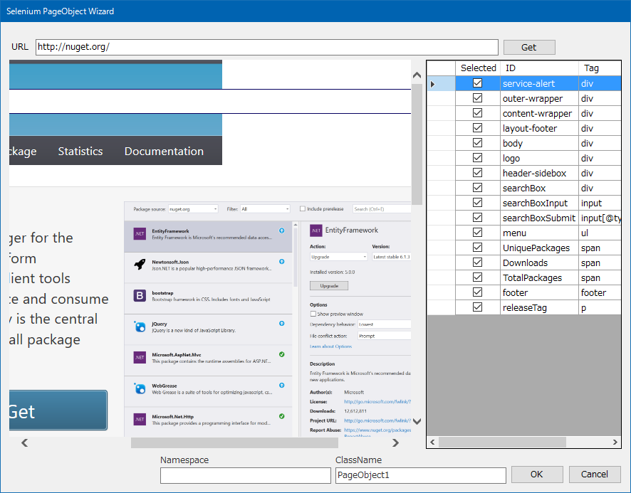

Moca.NET Template
This project is maintained by mocanet
Moca.NET Template
Moca.NET framework Templates.
Project Templates (Only supports VB.NET code)
- Moca.NET Windows Forms application
- Moca.NET Web application
Item Template (supports VB.NET and C# code)
for Moca.NET
- Dao class template
- Entity Wizard
- Web User Control template
- Web Form template
- Web Master Page template
- Web Session interface template
- Web Cookie interface template
- Web API Controller template
- IMethodInterceptor implements class template
- SQL statements Interceptor implements class template
for Selenium
- Selenium Test Class
- Selenium Test Page Class
- Selenium Test PageObject Class Wizard
How to get
vs2012 or later : Moca.NET Template 3.0
vs2010 : Moca.NET Templates 2010
Entity Wizard
It's the wizard into which a used entity class is formed from a SQL statement to use Moca.NET.


'------------------------------------------------------------------------------
' <auto-generated>
' このコードはツールによって生成されました。
' ランタイム バージョン:4.0.30319.42000
'
' このファイルへの変更は、以下の状況下で不正な動作の原因になったり、
' コードが再生成されるときに損失したりします。
' </auto-generated>
'------------------------------------------------------------------------------
Option Strict Off
Option Explicit On
Imports Moca.Db
Imports Moca.Db.Attr
Imports System.ComponentModel
''' <summary>
''' EntityClass1 エンティティ
''' </summary>
''' <remarks></remarks>
''' <history>
''' </history>
Public Class EntityClass1
Implements System.ComponentModel.INotifyPropertyChanged
#Region " Declare "
Private _id As Integer
Private _note As String
Private _name As String
#End Region
#Region " Property "
''' <summary>
''' Id (Id) Property.
''' </summary>
<Column("Id")> _
Public Property Id() As Integer
Get
Return Me._id
End Get
Set
Me._id = value
OnPropertyChanged("Id")
End Set
End Property
''' <summary>
''' Note (Note) Property.
''' </summary>
<Column("Note")> _
Public Property Note() As String
Get
Return Me._note
End Get
Set
Me._note = value
OnPropertyChanged("Note")
End Set
End Property
''' <summary>
''' Name (Name) Property.
''' </summary>
<Column("Name")> _
Public Property Name() As String
Get
Return Me._name
End Get
Set
Me._name = value
OnPropertyChanged("Name")
End Set
End Property
#End Region
Public Event PropertyChanged As System.ComponentModel.PropertyChangedEventHandler Implements System.ComponentModel.INotifyPropertyChanged.PropertyChanged
Protected Overridable Sub OnPropertyChanged(ByVal name As String)
RaiseEvent PropertyChanged(Me, New System.ComponentModel.PropertyChangedEventArgs(name))
End Sub
End ClassSelenium Test PageObject Class Wizard
Wizards which makes a PageObject class of selenium from a Web page.

'------------------------------------------------------------------------------
' <auto-generated>
' このコードはツールによって生成されました。
' ランタイム バージョン:4.0.30319.42000
'
' このファイルへの変更は、以下の状況下で不正な動作の原因になったり、
' コードが再生成されるときに損失したりします。
' </auto-generated>
'------------------------------------------------------------------------------
Option Strict Off
Option Explicit On
Imports MiYABiS.SeleniumTestAssist
Imports OpenQA.Selenium
Imports OpenQA.Selenium.Support.PageObjects
''' <summary>
''' PageObject1 PageObjects
''' </summary>
''' <remarks></remarks>
''' <history>
''' </history>
Public Class PageObject1
Inherits SeleniumAction
#Region " Declare "
<FindsBy([Using]:="service-alert")>
Private _serviceAlert As IWebElement
<FindsBy([Using]:="outer-wrapper")>
Private _outerWrapper As IWebElement
<FindsBy([Using]:="content-wrapper")>
Private _contentWrapper As IWebElement
<FindsBy([Using]:="layout-footer")>
Private _layoutFooter As IWebElement
<FindsBy([Using]:="body")>
Private _body As IWebElement
<FindsBy([Using]:="logo")>
Private _logo As IWebElement
<FindsBy([Using]:="header-sidebox")>
Private _headerSidebox As IWebElement
<FindsBy([Using]:="searchBox")>
Private _searchBox As IWebElement
<FindsBy([Using]:="searchBoxInput")>
Private _searchBoxInput As IWebElement
<FindsBy([Using]:="searchBoxSubmit")>
Private _searchBoxSubmit As IWebElement
<FindsBy([Using]:="menu")>
Private _menu As IWebElement
<FindsBy([Using]:="UniquePackages")>
Private _uniquePackages As IWebElement
<FindsBy([Using]:="Downloads")>
Private _downloads As IWebElement
<FindsBy([Using]:="TotalPackages")>
Private _totalPackages As IWebElement
<FindsBy([Using]:="footer")>
Private _footer As IWebElement
<FindsBy([Using]:="releaseTag")>
Private _releaseTag As IWebElement
#End Region
Public Sub New(ByVal driver As IWebDriver)
MyBase.New(driver)
End Sub
End ClassLicense
Microsoft Public License (MS-PL)